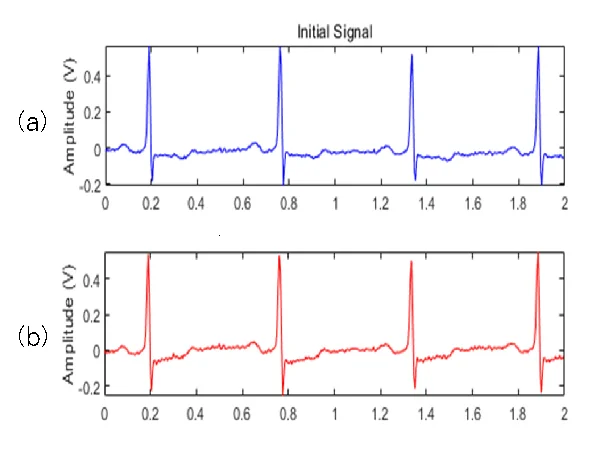
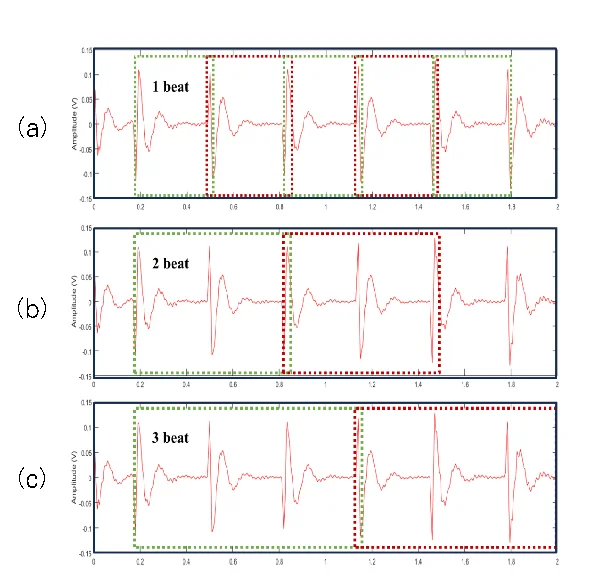
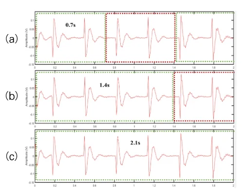
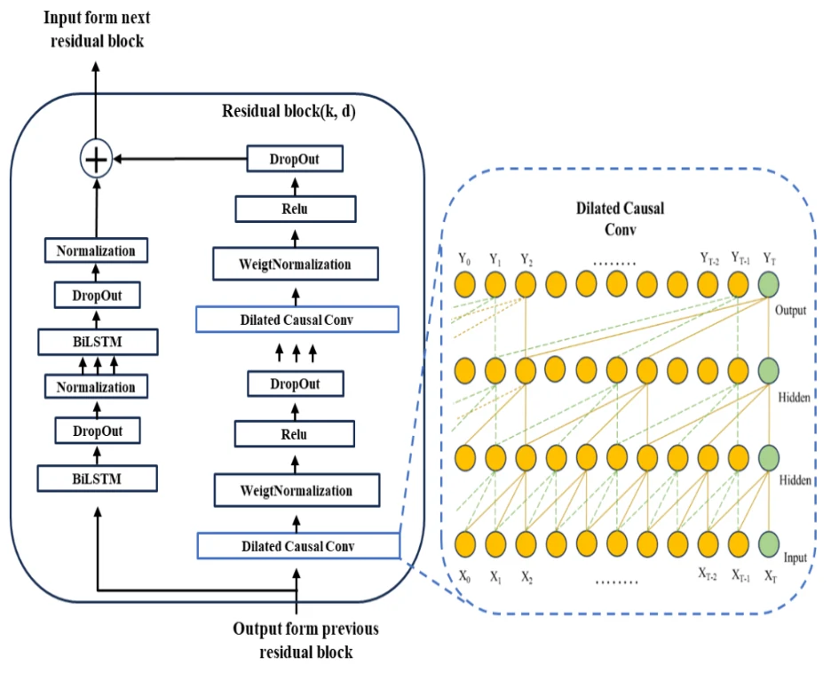
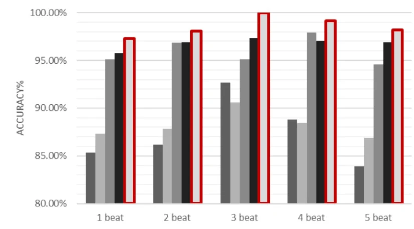

프로젝트 개요
심전도는 사람마다 파형이 달라 위조하기 어렵고, 몸에 부담을 주지 않고 측정할 수 있어 생체인식에 쓰입니다. 운전자를 식별하면 운전자 보조 시스템이 사람에 맞춰 설정을 바꿀 수 있습니다.
공개 데이터에서 잡음을 제거하고 신호를 자르는 기준과 길이를 실험 변수로 두고 , TCN과 BiLSTM을 결합한 모델의 식별 정확도를 단일 네트워크와 비교했습니다. 결과를 한국차세대컴퓨팅학회 논문지(2024.04, KCI)에 1저자로 게재했습니다. 논문 원문 →
99.76% drivedb 식별 정확도 (6명, 3주기 입력)
99.97% NSRDB 식별 정확도 (18명, 3주기 입력)
F1 1.0000 NSRDB · 3주기 입력
연구 배경
기존 연구는 주로 CNN이나 LSTM 하나로 심전도를 분류했습니다. 논문에서는 두 방식의 한계를 이렇게 정리했습니다.
CNN - 고정 길이 입력에 맞춰져 지역적 특징은 잘 잡지만, 시간에 따른 전역적인 관계를 반영하기 어렵다LSTM - 긴 시간 의존성은 잘 다루지만, 반주기적으로 반복되는 심전도의 형태 특징을 분석하는 데 한계가 있다
그래서 넓은 시간 범위를 병렬로 보는 TCN과, 앞뒤 시점을 함께 보는 BiLSTM을 하나의 블록 안에서 결합하는 구조를 제안했습니다.
NSRDB를 사용한 기존 사용자 식별 연구 (논문 표 3)
Pyun et al.의 정확도는 논문 표 1과 본문에는 99.8%, 표 3에는 99.93%로 적혀 있습니다.
데이터
실제 운전 중 측정한 심전도와 일반적인 정상 심전도를 함께 보기 위해 PhysioNet 공개 데이터 두 종을 사용했습니다.
데이터 내용 drivedb 운전 중 수집한 심전도 · 피험자 6명 · 기록 17개 · 15.5Hz · 1시간 NSRDB 정상 리듬 심전도 · 피험자 18명 · 기록 18개 · 128Hz · 2시간
논문 표 2 기준
전처리 · 분할
1. 잡음 제거 - 심전도는 주변 환경의 잡음에 쉽게 오염됩니다. 원인별로 필터를 나눴습니다.
노치 필터 - 전력선 잡음 제거고역통과 필터 - 호흡 때문에 생기는 기저선 흔들림 제거대역통과 필터 - QRS 파형 주변의 잡음 제거이동평균 필터 - 남은 미세 잡음 제거
2. R파 검출 - Pan-Tompkins 알고리즘으로 각 심박의 R파 정점을 찾아 분할의 기준점으로 삼았습니다.
3. 분할 - 두 가지 방식을 모두 만들었습니다. 기준점 분할은 R파 정점을 기준으로 1~5주기씩 자르고 정규화하며, 비기준점 분할은 0.7 · 1.4 · 2.1초의 고정 길이로 자릅니다.
4. STFT - 분할한 신호를 짧은 구간 단위로 푸리에 변환해 시간에 따라 변하는 주파수 특성을 표현했습니다.

필터링 전(위)과 후(아래) 신호 (논문 그림 2) 
기준점 분할: 1 · 2 · 3주기 (논문 그림 3)

비기준점 분할: 0.7 · 1.4 · 2.1초 (논문 그림 4)
모델 구조
Residual block 하나 안에 두 경로를 두고 출력을 더했습니다.
TCN 경로 - Dilated Causal Conv → Weight Normalization → ReLU → Dropout을 두 번 반복. 간격을 넓힌 합성곱으로 멀리 떨어진 시점 사이의 패턴을 병렬로 학습BiLSTM 경로 - BiLSTM → Dropout → Normalization을 두 번 반복. 각 시점에서 앞뒤 정보를 함께 학습전체 - Residual block을 여러 개 쌓은 뒤 BiLSTM → Dropout → Fully Connected → Softmax로 운전자를 분류

Residual block 구조: 오른쪽 TCN 경로와 왼쪽 BiLSTM 경로의 출력을 더함 (논문 그림 5(a))
담당 기술
영역 사용 기술 실험 환경 MATLAB R2023a · AMD Ryzen 5800X 신호 처리 노치 · 고역통과 · 대역통과 · 이동평균 필터, Pan-Tompkins, STFT 모델 TCN(Dilated Causal Conv) · BiLSTM 결합 Residual block 비교 모델 CNN · LSTM · TCN · TCN-CNN · CNN-LSTM · CNN-BiLSTM
트러블슈팅
① 어디서 자를 것인가: 분할 방식을 실험 변수로
문제 같은 모델이라도 심전도를 어떤 기준으로 자르느냐에 따라 입력에 담기는 정보가 달라집니다.
원인 고정 시간으로만 자르면 심박 하나의 파형이 창 경계에서 잘려 사람마다 다른 형태 특징이 빠질 수 있습니다.
해결 모델만 비교하지 않고 R파 기준 분할과 고정 길이 분할을 모두 만들어 같은 모델들로 비교했습니다.
결과 고정 길이 분할은 기준점 분할보다 전반적으로 정확도가 낮았고, 길이가 길어질수록 떨어졌습니다(제안 모델 97.53% → 95.18% → 93.66%). 그래도 제안 모델이 비교 모델보다 최소 7.75 · 5.31 · 6.75%p 높았습니다.
비기준점 분할 정확도 · drivedb (논문 그림 7)
② 몇 주기를 넣을 것인가: 1~5주기 비교에서 3주기 선택
문제 R파 기준으로 자르더라도 한 번에 몇 주기를 넣을지에 따라 정보량과 잡음이 함께 달라집니다.
해결 입력 주기를 1주기부터 5주기까지 바꿔 가며 같은 조건에서 모두 비교했습니다.
결과 3주기 입력에서 99.76% 로 가장 높았고, 5주기에서는 97.31%로 다시 낮아졌습니다. 모든 주기에서 제안 모델이 CNN · LSTM보다 높았습니다.
기준점 분할 · 입력 주기별 정확도 · drivedb (논문 그림 6 수치표)
논문 본문에는 3주기의 CNN · LSTM 값이 90.01% · 87.58%로 그림과 반대로 적혀 있습니다. 여기서는 그림 6의 수치표를 따랐습니다.
③ 단일 네트워크의 한계: TCN 95.13% → TCN-BiLSTM 99.76%
문제 단일 네트워크 중 가장 높았던 TCN도 drivedb 95.13%, NSRDB 96.13%에 머물렀습니다.
해결 TCN 경로와 BiLSTM 경로를 Residual block 안에서 더하는 구조로, 넓은 시간 패턴과 앞뒤 의존성을 함께 학습하게 했습니다. TCN-CNN, CNN-LSTM, CNN-BiLSTM 같은 다른 조합과도 1~5주기 전 구간에서 비교했습니다.
결과 3주기 입력에서 TCN 대비 drivedb +4.63%p(99.76%), NSRDB +3.84%p(99.97%). NSRDB F1은 1.0000으로, 기존 최고 성능 연구(Pyun et al., 0.9993)보다 0.0007 높았습니다.
NSRDB · 입력 주기별 정확도 비교 (논문 그림 8(b))

범례: CNN_BiLSTM · CNN_LSTM · TCN · TCN-CNN · 제안 모델(TCN-BiLSTM)
비교 결과
데이터 결과 (R파 기준 · 3주기 입력) drivedb 제안 모델 99.76% · TCN 95.13% · LSTM 90.01% · CNN 87.58% (그림 6 수치표 기준) NSRDB 제안 모델 99.97% · F1 1.0000 · TCN 96.13% · 기존 최고 Pyun et al. 99.93% · F1 0.9993
회고
신설 연구실에서 생체신호를 처음 다루면서, 결과를 바꾸는 것은 모델만큼이나 데이터를 정리하고 자르는 기준 이라는 것을 배웠습니다. 모델을 고르기 전에 비교 조건부터 정하는 습관이 이 연구에서 시작됐습니다.
지금 다시 보면 부족한 점이 분명합니다. 논문에 학습 · 평가 데이터 분할 비율과 측정 세션을 나눴는지, 필터 차단 주파수와 학습 하이퍼파라미터를 적지 않아 다른 사람이 그대로 재현하기 어렵습니다. 그림 6의 수치표와 본문 값이 서로 다르게 적힌 부분도 발견했습니다. 이후 프로젝트에서는 사람 단위로 데이터를 나누고, 그 기준과 설정을 결과와 함께 기록 하고 있습니다.
논문에서 남긴 다음 과제는 실제 주행 중에 생체신호를 직접 수집해 데이터베이스를 만들고, 운전자의 복합적인 상태까지 함께 식별하는 멀티모달 시스템으로 확장하는 것입니다.